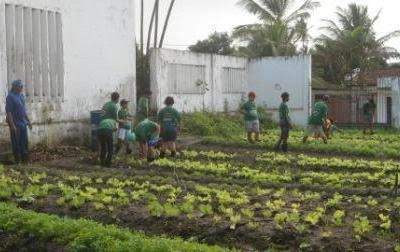

- Preparar o solo
- escolher as sementes
- Plantar nos canteiros
- Regar todos os dias
- Colher no tempo certo
- Cuidado com pragas

A horta comunitária é um espaço onde os cooperados cultivam verduras e legumes de forma coletiva, dividindo o trabalho e a colheita.
Quem planta sabe esperar, e quem espera sabe colher. /as vezes/
Para aprender mais sobre agricultura sustentável visite o site da RuralSustentável
Ficha produzida para a aula de programação web